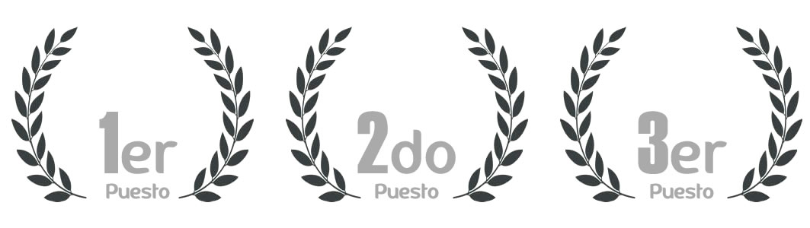
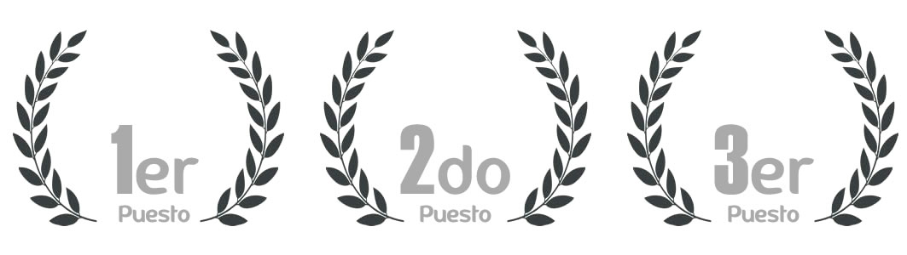

Equipos Participantes


sistema para mejorar la rentabilidad e implementación para empresas de todo tipo, con el fin de ahorrar y asegurar una fuente de electricidad constante.
...UrbanPlanner es un herramienta para la toma de decisiones en materia de transporte público urbano basado en inteligencia artificial, optimización,
...better esta compuesta de tres componentes; una tienda que se dedica a la venta de componentes electrónicos y materiales para robotica, un grupo de investigación y
...Proponemos introducir al mercado un talco en sachet para calzado, basándonos en la máxima calidad de contenido, un excepcional aspecto visual y con la máxima reducción de costos
...Se desea utilizar tarjetas y pulseras con tecnologia nfc para la gestion de las ventas de bienes de consumo en bares y discotecas.
...Estamos realizando un proyecto en el cual se necesita de juguetes que esten rotos para realizar un reciclaje de estos juguetes y realizar otro tipo de cosas con estos juguetes.
...7x24, es un negocio de tienda que funciona las 24 horas del día y vende productos básicos de alimentación y bebida, productos básicos que podemos encontrar en un tópico.
..."Este proyecto consiste en abrir un snack que se centre en la elaboración y comercialización de productos específicamente para personas que sufran de diabetes, que sean propensas a
..."El proyecto ""Filtro para tu casa"" ayudara a la población a consumir agua de calidad con los niveles adecuados aptos para el consumo. El filtro cuenta con diferentes capas que
...Proponemos una idea creativa, para promocionar productos que están en el mercado o están por lanzarse en el mercado, para eso existe QUIZ US. Un lugar donde
...Aplicación móvil basado en contenido multimedia y realidad aumentada informando sobre puntos de interés cultural e histórico orientado al turismo y educación
...Se estima que en nuestra ciudad se generan alrededor de 662,44 toneladas de residuos sólidos por día, de los cuales 9.5% son plásticos y 0,5% son envases de tetra pak
...Evaluar la viabilidad económica para poder aperturar un Bar & Grill en la ciudad de Arequipa, que pueda competir con las franquicias de TGI FRIDAYS, CHILIS, entre otras;
...Hoy en día las personas tienen departamentos o casas propias, éstas no utilizan todos los espacios que tienen, por ejemplo: cuartos, patios, etc. Muchas veces
...Este proyecto consiste en diseñar y fabricar una tablet a un costo accesible para la mayoria de gente q vive en el Perú y porq no a toda latinoamerica. La tablet ejecuta
...NanaYA es la necesidad del mercado arequipeño por niñeras responsables, que puedan cuidar niños por horas, este mercado laboral saldra de las estudiantes universitarias
...80's Play es una aplicación de música, diseñada para quienes aman la música y gustan de un estilo retro con un poco de moda actual. 80's Play ofrece una entretenida
...TeReto es una plataforma digital que permite organizar campeonatos, ligas y duelos amistosos en los distintos deportes del país.Esta orientado a todos los equipos amateurs
...Eventus es la herramienta definitiva de gestión de eventos on-line que te ayuda a tener el control absoluto de tus canales de comunicación y ventas de una manera fácil y
...Aplicación móvil para búsqueda de playas de estacionamiento públicas cercanas a la ubicación del usuario, conocer su precio, servicios y disponibilidad en tiempo real; también
...Es una idea de negocios, que sería de gran ayuda a las grandes empresas de explotación de algún mineral o gas, brindándoles un producto de calidad y que empiecen a confiar en
...Cambiar el estilo de vida de las personas, promoviendo su Bienestar y comodidad a nuestros consumidores y clientes atravez de nuestra marca SANUFIT, que
...Se trata de una red social, en la que se aprovecha de la ubicacion de las personas para crear una red de contactos momentaneos, es decir nuestra ideologia es que una red esta donde hay personas,
...MascercApp es una aplicacion que permite a los usuarios saber que lugares de atencion y venta en telefonia y de venta de productos tecnológicos
...La base de este proyecto es el utilizar una fuente alternativa de energía, en este caso, el sol. Asi mismo se diseñara un sistema para mejorar la rentabilidad e implementación para empresas de todo tipo, con el fin de ahorrar y asegurar una fuente de electricidad constante. Se cuenta con un gran mercado empezando por Arequipa y zonas aledañas donde el sol es un recurso sin explotar y con muy poca competencia, por lo que se espera grandes resultados.
IntegrantesSe requiere integrantes (4) con conocimientos en marketing/diseño, finanzas, ing.electronica/telecomunicaciones, administración empresarial. Las personas interesadas pueden escribirme a mi correo o llamarme
"UrbanPlanner es un herramienta para la toma de decisiones en materia de transporte público urbano basado en inteligencia artificial, optimización combinatoria y GIS (Geographic Information Systems)
IntegrantesNo requerimos Integrantes
better esta compuesta de tres componentes; una tienda que se dedica a la venta de componentes electrónicos y materiales para robotica, un grupo de investigación y de desarrollo de proyectos que a la vez asiste a competencias de robotica, electrónica, mecatrónica y una academia que brinda servicios de enseñanza de diferentes cursos no muy convencionales en nuestro país. Estas tres se complementan una a otra pero a la vez no dependen una de la otra, es lo que la hace tener un modelo jerárquico.
Integrantes"Requerimos una persona que sea de la carrera de administración, que sepa de marketing y/o publicidad. "
Proponemos introducir al mercado un talco en sachet para calzado, basándonos en la máxima calidad de contenido, un escepcional aspecto visual y con la máxima reducción de costos sin sacrificar ninguna de las características antes mencionadas. Pretendemos establecer un nuevo régimen en cuanto al uso práctico de accesorios para el aseo e higiene personal, de la facil portabilidad y accesibilidad a éstos, ya que viendo el crecimiento que se da en éste sector, nos es muy favorable la presentación de éstos tipos de productos, que además de ser de uso cotidiano, simple y masivo, contamos con la ventaja competitiva de tener un envase nuevo, pequeño y práctico, que tiene la facilidad de consumirse en un corto tiempo, generando una cultura de consumo y posteriormente una retención del consumidor. Propagando un vínculo a corto y largo plazo, permitiéndonos ser recomendados y comercializados en muchos más lugares.
Integrantes"Buscamos tres integrantes, todos con perfiles distintos.
1. Interesado, o con experiencia en el tema de Marketing.
2. Interesado en el tema de matemáticas, números y cálculos.
3. Interesado, con experiencia o conocimiento en química orgánica e inorgánica. "
Se desea utilizar tarjetas y pulseras con tecnologia nfc para la gestion de las ventas de bienes de consumo en bares y discotecas.
IntegrantesNo integrantes por ahora
Estamos realizando un proyecto en el cual se necesita de juguetes que esten rotos para realizar un reciclaje de estos juguetes y realizar otro tipo de cosas con estos juguetes.
IntegrantesNo Integrantes, estamos bien asi :)ahora
7x24, es un negocio de tienda que funciona las 24 horas del día y vende productos básicos de alimentación y bebida, productos básicos que podemos encontrar en un tópico.
IntegrantesNo integrantes por ahora
"Este proyecto consiste en abrir un snack que se centre en la elaboración y comercialización de productos específicamente para personas que sufran de diabetes, que sean propensas a sufrir de este mal y personas que deseen mantener una dieta saludable. Una dieta adecuada. Nuestra principal motivación para realizar este proyecto es poder ofrecerles alimentos sanos y que no sientan que se están privando de comer algo rico, sin que este vaya en contra de su salud. Buscamos romper con el mito de que lo saludabl siempre tiene mal sabor ofreciendo una amplia variedad de podructos para comer en mesa, empaquetados o para delivery."
IntegrantesNo integrantes por ahora
El proyecto "Filtro para tu casa" ayudara a la población a consumir agua de calidad con los niveles adecuados aptos para el consumo. El filtro cuenta con diferentes capas que facilitaran la purificación de agua, el tamaño es de uso convencional, los elementos que componen el filtro no producen impacto ambiental graves.
IntegrantesNo integrantes por ahora
Proponemos una idea creativa, para promocionar productos que están en el mercado o están por lanzarse en el mercado, para eso existe QUIZ US. Un lugar donde convertimos la participación en estudios de opinión mediante una experiencia agradable y remunerada. Tu participación es muy importante, y será siempre recompensada y proporcional a tu esfuerzo, tratándote de forma personalizada, y asegurando tu privacidad
IntegrantesNo integrantes por ahora
Aplicación móvil basado en contenido multimedia y realidad aumentada informando sobre puntos de interés cultural e histórico orientado al turismo y educación
IntegrantesNo integrantes por ahora
Se estima que en nuestra ciudad se generan alrededor de 662,44 toneladas de residuos sólidos por día, de los cuales 9.5% son plásticos y 0,5% son envases de tetra pak. La idea es recuperar estos residuos que cumplieron su ciclo de vida para re insertarlos en la cadena productiva, mediante la elaboración de un material conocido como madera plástica y planchas de polialuminio, con los cuales se pueden crear diversos productos como carpetas escolares, pallets, estantes, etc. De esta forma no solo crearemos industria en nuestra ciudad sino que contribuiremos a reducir los impactos negativos al medio ambiente
IntegrantesUno o dos estudiantes de Ingeniería Industrial, emprendedores, con ganas de formar su propia empresa. De preferencia que sea bueno en costos y presupuestos.
Evaluar la viabilidad económica para poder aperturar un Bar & Grill en la cuidad de Arequipa, que pueda competir con las franquicias de TGI FRIDAYS, CHILIS, entre otras;pero dándole un valor agregado para que la empresa sea totalmente peruana logrando así la aceptación y preferencia del cliente. Se implementará aspectos tecnológicos como el uso de tablets, aplicaciones, para así brindar un mejor servicio
IntegrantesNo se requiere de más integrantes.
Hoy en día las personas tienen departamentos o casas propias, éstas no utilizan todos los espacios que tienen, por ejemplo: cuartos, patios, etc. Muchas veces estos espacios están vacíos y nadie les da un buen uso o los aprovecha. A la par existe gente que está buscando espacios para algún evento, vivienda, etc. por un período corto o largo. La idea propone proveer un medio donde se conecten ambos lados, donde el propietario se ve beneficiado y el arrendatario pueda encontrar lo que está buscando.
IntegrantesRequerimos Alguien con Conocimientos de marketing, Conocimiento en gestión de proyectos, Conocimiento sobre el mundo de startup
Este proyecto consiste en diseñar y fabricar una tablet a un costo accesible para la mayoria de gente q vive en el Perú y porq no a toda latinoamerica. La tablet ejecuta el sistema operativo Windows y es capas de ejecutar aplicaciones profesionales como Microsoft Office Completo. Visual Studio y muchos mas. Este producto esta orientado a un mercado de estudiantes universitarios y Escolares.
IntegrantesSe Requiere : Una persona con Conocimiento en Administración, y alguien que tenga conocimiento en Marketing y una persona con conocimiento avanzado en Electronica digital.
El proyecto nace , en la necesidad de muchas madres que no tienen con quien dejar el cuidado de sus hijos, por razones de trabajo o de eventos imprevistos, entonces encontramos un mercado que seria aceptado en la localidad de arequipa pues, damos un valor agregado , incorporando la tecnologia como medio para contactar a niñeras (que de mercado seria un cambio) y creariamos un mercado no explotado con tecnologia de aplicaciones, y de otras herramientas tecnologicas. NanaYA , es la necesidad del mercado arequipeño por niñeras responsables, que puedan cuidar niños por horas, este mercado laboral saldra de las estudiantes universitarias mujeres que deseen ganar laborando cuidando niños, por horas, de esta manera tambien aceleramos la economia para empoderar a los estudiantes a tomar trabajos por horas y puedan cubrir sus gastos
Integrantes"Necesitamos una estudiante de psicología, educación, o que tenga contacto con niños de preferencia mujer
"80's Play es una aplicación de música, diseñada para quienes aman la música y gustan de un estilo retro con un poco de moda actual.80's Play ofrece una entretenida interfaz con características ""ochenteras"" y diferentes opciones que el usted descubrirá, la reproducción de una canción nunca fue tan espectacular; hace el recuerdo de la época de discos de vinilo y le agrega un toque moderno con altas dosis de innovación.
Integrantes""
TeReto es una plataforma digital que permite organizar campeonatos, ligas y duelos amistosos en los distintos deportes del país. Esta orientado a todos los equipos amateurs de las distintas disciplinas (sobretodo fulbito y futbol), dentro de la cual uno puede retar a equipos generando un ranking y fomentando la competitidad, pudiendo de igual manera buscar las canchas disponibles, reservarlas online y sobretodo la organización de campeonatos amateurs con la posibilidad de llegar a los oídos de posibles patrocinadores y marcas de productos deportivos e incluso empresas de cervecería interesadas en aparecer en la aplicación y página web. Se manejan categorías por edades y/o disciplinas. Tiene su base en una aplicación móvil (multiplataforma) y página web
Integrantes""
Eventus es la herramienta definitiva de gestión de eventos on-line que te ayuda a tener el control absoluto de tus canales de comunicación y ventas de una manera fácil y sencilla de utilizar. Con herramientas únicas que te permiten crear una pagina web con diseño profesional, realizar campañas de e-mailing, encuestas y segmentar a tus clientes en minutos y desde una sola plataforma. El contenido es poder, empodera tu contenido EVENTUS
Integrantes""
Aplicación móvil para búsqueda de playas de estacionamiento públicas cercanas a la ubicación del usuario, conocer su precio, servicios y disponibilidad en tiempo real; también ayudará a controlar el consumo del tiempo. Adicionalmente, se planea agregar la capacidad de hacer reservas en las mismas e información relevante para los usuario (grifos, servicio ténico, etc)
Integrantes""
Es una idea de negocios, que sería de gran ayuda a las grandes empresas de explotación de algún mineral o gas, brindándoles un producto de calidad y que empiecen a confiar en nuestra marca, convirtiéndolos así en nuestros clientes. Venta y préstamo de servicios de transporte, a empresas que requieran la movilización de su personal, siendo estas mineras, etc. Ofreciéndoles seguridad y comodidad a sus subordinados, tratando de alcanzar y sobrepasar sus anteriores expectativas sobre el servicio o venta, de alguna otra empresa dada, que sea competencia con la nuestra.
Integrantes""
CAMBIAR EL ESTILO DE VIDA DE LAS PERSONAR PROMOVIENDO LES DE BIENESTAR Y COMODIDAD A NUESTROS CONSUMIDORES Y CLIENTES A TRAVÉS DE NUESTRA MARCA SANUFIT, QUE PROMUEVE UN ESTILO DE VIDA SALUDABLE, NUTRITIVO DE CALIDAD. LAS PREPARACIONES OFRECIDAS EN EL LOCAL ""SANUFIT""SON ELABORADAS CON MATERIA PRIMA FRESCA PRE-SELECCIONADA CON LA GARANTÍA DE NUESTRO DISTRIBUIDOR. LOS PLATOS OFRECIDOS EN LA CARTA SON ADEMAS PENSADOS EN PRIMER LUGAR EN LA CORRECTA ALIMENTACIÓN DE NUESTROS CLIENTES OFRECIÉNDOLES UN ESTILO DE VIDA DE CALIDAD Y NUTRIENTES BALANCEADOS Y NECESARIOS PARA CADA MOMENTO DEL DÍA PROMOVIENDO ASÍ UNA MEJOR FORMA DE VIDA, SALUDABLE Y ORIENTADO A TODO PUBLICO EN GENERAL. SANUFIT, SE CARACTERIZA POR NUESTROS PRODUCTOS SENCILLOS, PERSONALIZADOS Y ENFOCADOS NO SOLO EN EL RENDIMIENTO FISICO SI NO EN EL INTELECTUAL DE NUESTROS CLIENTES, UNA TENDENCIA MUNDIAL DE RAPIDO CRECIMIENTO Y AUN POCO EXPLOTADO EN EL PAIS SIENDO PIONEROS A NIVEL NACIONAL Y REGIONAL, EN EL CUIDADO DE LA SALUD Y NUTRICION DE NUESTROS CLIENTES AL PURO ESTILO SANUFIT
Integrantes""
Se trata de una red social, en la que se aprovecha de la ubicacion de las personas para crear una red de contactos momentaneos, es decir nuestra ideologia es que una red esta donde hay personas, estas normalmente tienen algo en comun para estar en un lugar, ej una universidad, un restaurante, la gente que se reune para el mismo bmc, todos estos son una red social y deberian ser capaces de interactuar sin la necesidad de ser contactos explicitamente
Integrantes""
MascercApp es una aplicacion que permite a los usuarios saber que lugares de atencion y venta en telefonia y de venta de productos tecnologicos se encuentran cerca a su ubicacion. Esta aplicacion esta diseñada para dispositivos moviles
Integrantes"Busco desarrollador que conozca de dispositivos moviles, una persona con conocimientos en Administracion y una persona con conocimiento en telecomunicaciones "